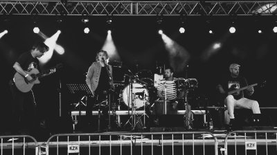

BAND
"It was originally a progressive metal band from the dark foothills of the Ore Mountains, founded in 1998, which later embarked on an individual acoustic journey.
Their work gradually developed into a mysterious and unclassifiable style that can best be characterized as fantasy world music. In their compositions they combine elements of metal with Spanish-Arabic, Celtic and Balkan influences, as well as Renaissance and folk tones. They also enrich the classic acoustic sound with various percussion instruments, effects and synthesizers.
The important and indivisible part of the music are lyrics inspired by the works of M. Waltari, J. R. R. Tolkien or H. Ch. Andersen."
Line-up:
Lucie Novotna (vocals), Stepan Langer (guitars, synth programming), Ales Nejepsa (bass), Jakub Rehak (percussion)
Guest musicians:
Stanislav Hajek (percussion), Vojtech Draganov (synth, piano)
